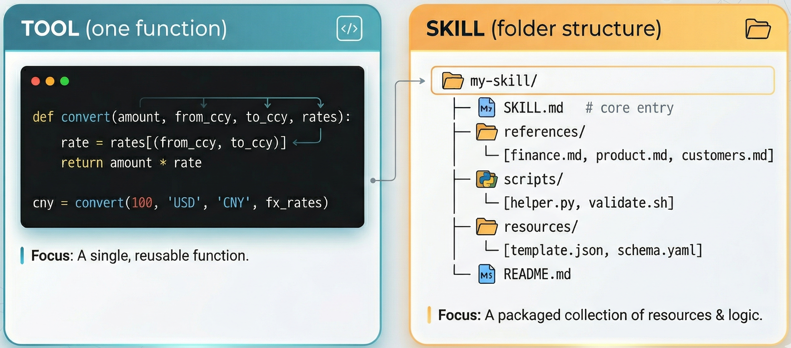
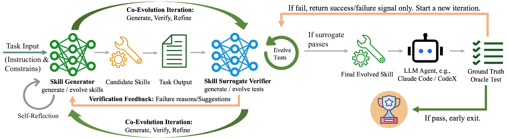
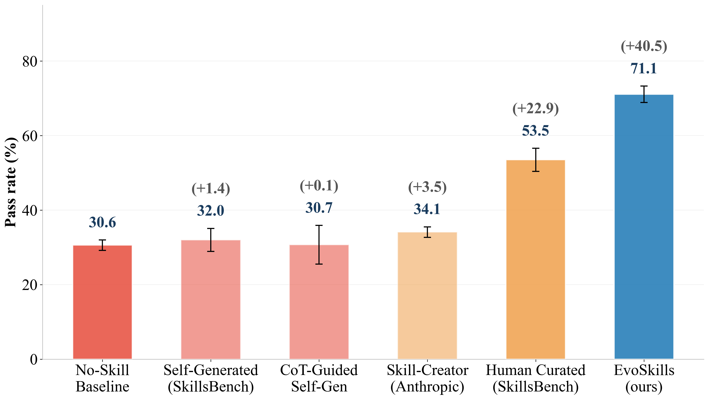
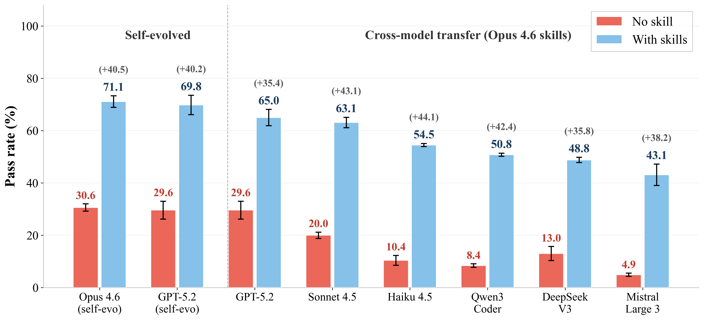
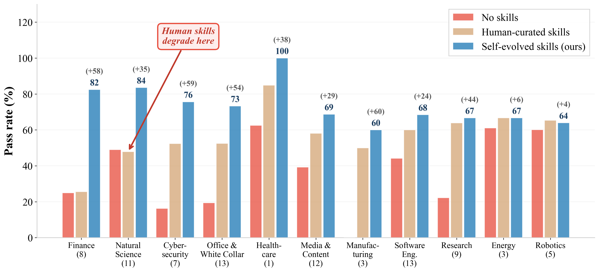
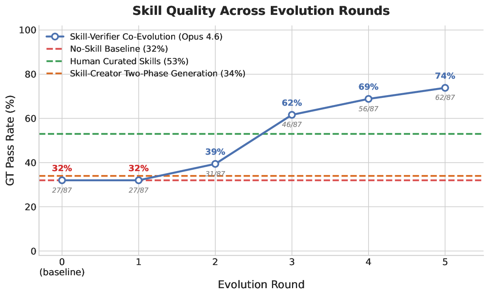

A self-evolving framework that lets LLM agents autonomously construct complex, multi-file skill packages.
Anthropic proposes the concept of skills for LLM agents to tackle multi-step professional tasks that simple tool invocations cannot address. A tool is a single, self-contained function, whereas a skill is a structured bundle of interdependent multi-file artifacts. Currently, skill generation is label-intensive and suffers from human–machine cognitive misalignment, which degrades agent performance.
We propose CoEvoSkills, a self-evolving framework that enables agents to autonomously construct complex, multi-file skill packages. It couples a Skill Generator that iteratively refines skills with a Surrogate Verifier that co-evolves to provide informative and actionable feedback without access to ground-truth test content. On SkillsBench, CoEvoSkills achieves the highest pass rate among five baselines on both Claude Code and Codex, and also exhibits strong generalization to six additional LLMs.
A tool is a single function. A skill is an orchestrated package of instructions, scripts, and references for long-horizon professional tasks.

Two components evolve together through iterative generate – verify – refine cycles.
Iteratively produces and refines structured multi-file skill bundles from the verifier's dense diagnostic feedback.
Information-isolated; independently evolves test assertions to provide actionable failure signals without ground-truth leakage.
Returns only a pass/fail signal, triggering test escalation while preserving strict information isolation.

First framework to produce structured, executable, multi-file skill packages via self-evolution.
Dense diagnostic feedback without test-content leakage during co-evolution.
Highest pass rate among five baselines on Claude Code and Codex.
Generated skills transfer effectively to six additional LLMs without retraining.




If you find CoEvoSkills useful, please consider citing:
@article{zhang2026coevoskills,
title = {CoEvoSkills: Self-Evolving Agent Skills via
Co-Evolutionary Verification},
author = {Zhang, Hanrong and Fan, Shicheng and Zou, Henry Peng and
Chen, Yankai and Wang, Zhenting and Zhou, Jiayu and
Li, Chengze and Huang, Wei-Chieh and Yao, Yifei and
Zheng, Kening and Liu, Xue and Li, Xiaoxiao and
Yu, Philip S.},
journal = {arXiv preprint arXiv:2604.01687},
year = {2026}
}